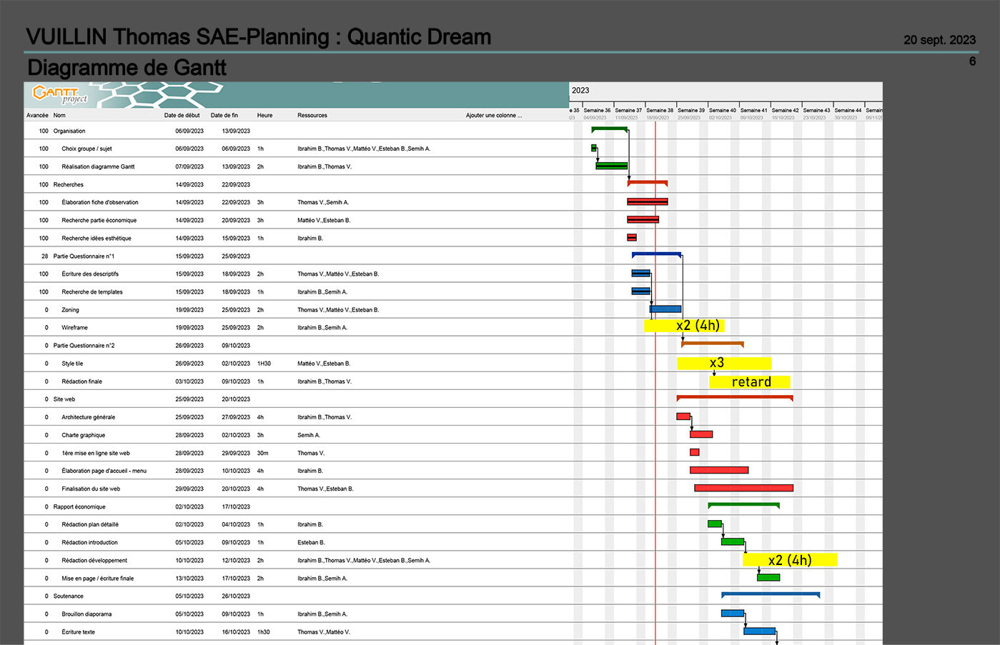

Dans la page que j'ai créée sur "Quantic Vision", je présente les jeux de Quantic Dream. Pour chaque jeu, il y a une photo et une brève description qui résume ce que le jeu offre. C'est une façon simple et visuelle de montrer ce que fait Quantic Dream.
UE5 et UE6. Collaborer pour réaliser des projets
SAÉ S1.05-06
Dans le cadre du projet SAÉ S1.05-06, nous avons choisi de concentrer notre étude sur Quantic Dream, une entreprise emblématique dans le secteur des jeux vidéo pour son approche innovante et créative. Le but était de créer un site web, "Quantic Vision", pour présenter de manière exhaustive Quantic Dream, ses produits emblématiques, et analyser sa position économique et son impact écologique.
Objectifs du Projet
Les principaux objectifs de ce projet étaient de :
- Réaliser une analyse détaillée de Quantic Dream, mettant en avant ses innovations, ses réalisations majeures dans l'industrie du jeu vidéo, et son impact sur l'économie et l'écologie.
- Développer un site web, "Quantic Vision", servant de plateforme pour partager nos découvertes et analyses.
- Utiliser l'outil de planification Gantt pour organiser efficacement le travail d'équipe et respecter les échéances du projet.
Compétences Développées
Au cours de ce projet, j'ai développé et renforcé plusieurs compétences clés :
- Développement Web : J'ai utilisé HTML5 et CSS3 pour créer le site "Quantic Vision", en me concentrant sur la clarté de la présentation et l'ergonomie pour offrir une expérience utilisateur agréable.
- Travail en Groupe : La collaboration efficace au sein de mon équipe a été essentielle pour le succès du projet. Cela a impliqué une communication régulière, le partage des tâches, et l'entraide.
- Gestion de Projet avec Gantt : L'utilisation de l'application Gantt a permis une planification détaillée et un suivi précis du projet, facilitant ainsi la répartition et la gestion des tâches.
- Versioning avec GitHub : GitHub a été un outil crucial pour collaborer sur le code, gérer les versions du site et documenter notre progression.
Notre GitHub sert de plateforme centrale pour le projet "Quantic Vision", où l'on peut accéder à l'ensemble du projet, y compris les dossiers et les fichiers créés par l'équipe. Il dispose également d'un fichier README qui contient toutes les informations importantes : la liste des membres du groupe, la répartition des tâches, ainsi que les liens vers les différentes pages du site. Cela permet à quiconque de comprendre rapidement la structure du projet et la contribution de chaque membre de l'équipe.
Nous avons également utilisé un planning de Gantt pour organiser et suivre le déroulement du projet "Quantic Vision". Ce planning a clairement défini les différentes étapes du projet, assignant à chaque tâche une durée prévue. En comparant le temps réellement passé sur chaque tâche avec notre plan initial, nous avons pu constater certains retards dans le développement, notamment dans la création des contenus et la finalisation du design du site. Ces écarts nous ont permis d'ajuster notre gestion de temps et de ressources pour les étapes suivantes, garantissant ainsi que le projet progresse malgré les imprévus. Le planning de Gantt a été un outil crucial pour visualiser notre avancement et organiser notre travail de manière efficace.
Conclusion
Ce projet SAÉ a été une expérience enrichissante qui m'a permis de mettre en pratique mes compétences en développement web, analyse économique et écologique, ainsi qu'en gestion de projet et travail d'équipe. La création de "Quantic Vision" a non seulement approfondi ma compréhension de Quantic Dream en tant qu'acteur clé de l'industrie du jeu vidéo, mais m'a également familiarisé avec des outils professionnels de gestion de projet tels que l'application Gantt et GitHub. Ce projet a démontré l'importance d'une planification efficace et d'une collaboration étroite pour atteindre des objectifs ambitieux.